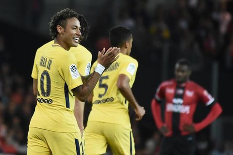

Buffon và Neymar chuẩn bị trở thành đồng đội ở PSG

Thủ môn người Italy quyết định chọn câu lạc bộ PSG của Pháp làm điểm dừng chân tiếp theo trong sự nghiệp cầu thủ.
Truyền thông Italy đưa tin Gianluigi Buffon sẽ gia nhập đội bóng nhà giàu của Pháp PSG theo hợp đồng có thời hạn 2 năm, qua đó trở thành đồng đội mới của Neymar. Thủ môn 40 tuổi này sẽ hưởng mức lương lên tới 8 triệu euro mỗi mùa ở đội bóng của thủ đô Paris.
Sau khi tham dự trận đấu tri ân tiền vệ Andrea Pirlo diễn ra trên sân San Siro vào sáng 22/5, thủ môn Buffon nói trên Sky Sports: “Ở tuổi 40, tôi không thể đưa ra quyết định theo cảm xúc của trái tim. Tôi cần bình tĩnh và phân tích mọi chuyện”.
Mùa giải 2017/18 khép lại, Buffon quyết định chia tay Juventus sau 17 năm gắn bó. Anh cùng đội bóng thành Turin lập kỷ lục giành 7 danh hiệu Serie A liên tiếp. Tuy nhiên, Buffon vẫn chưa một lần nâng cao cúp bạc Champions League trong sự nghiệp.
Khi nhận được câu hỏi về Buffon, Chủ tịch của PSG là Nasser Al-Khelaifi chia sẻ: “Anh ấy là thủ môn tuyệt vời, đồng thời là quý ông cá tính. Tôi tin chắc tất cả thành viên của PSG đều muốn Buffon đến đội bóng”.
Trong cuộc đua giành chữ kỹ của Buffon, đội bóng Pháp phải cạnh tranh với nhiều đối thủ đến từ Trung Quốc và châu Âu. Tuy nhiên, PSG cho thấy sự nhiệt tình và khát khao có sự phục vụ của thủ môn dày dặn kinh nghiệm người Italy mùa tới bằng việc đề nghị bản hợp đồng có thời hạn 2 năm.
Sau khi Buffon đến PSG, vị trí trong khung thành của đội bóng Pháp sẽ thuộc về anh. Điều đó đồng nghĩa với việc thủ môn Areola trở thành phương án dự phòng ở sân Công viên các Hoàng tử.